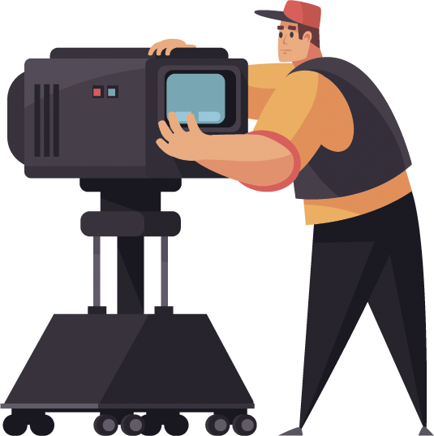
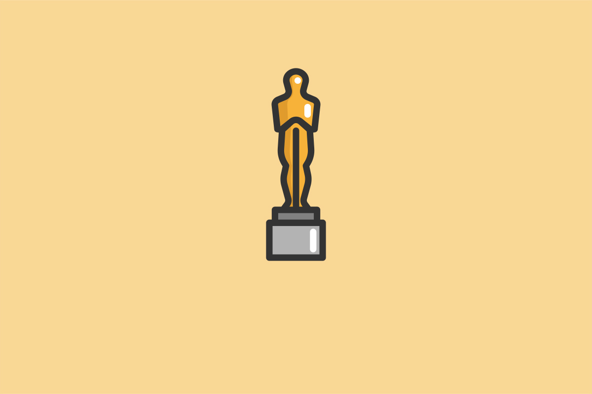
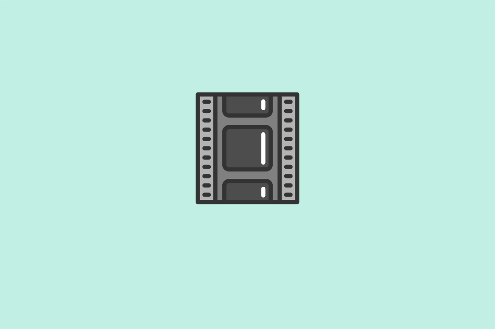

Как смотреть кино
За 8 занятий станем активными зрителями и разберёмся в кинопроцессе
 online course
online course
 18 saat
08 sentyabr
18 saat
08 sentyabr
За 8 занятий станем активными зрителями и разберёмся в кинопроцессе
Зритель для меня не потребитель моей продукции, не судья, а соучастник творчества, соавтор.
Порой фильмы устроены сложнее четырёхтомных романов. Но читать книги учат со школы, а смотреть кино — нет. При этом без подготовки бывает трудно получить от просмотра удовольствие.
На курсе из 8 занятий научимся быть осознанными зрителями. Познакомимся с этапами кинопроизводства и узнаем, как смотреть кино глазами сценариста, режиссёра и монтажёра. Разберёмся в особенностях жанров и рассмотрим важнейшие картины, от «Гражданина Кейна» до «Матрицы».

Для погружения в кинематограф
Длительность каждого занятия
Длительность курса
Занятия проходят онлайн в режиме вебинаров.
Записи всех занятий остаются в личном кабинете.
Можно задавать вопросы преподавателю.

8 сентября 20:00 Данила Кузнецов
10 сентября 20:00
Данила Кузнецов
13 сентября 13:00
Данила Кузнецов

15 сентября 20:00
Данила Кузнецов
17 сентября 20:00
Данила Кузнецов

20 сентября 13:00
Данила Кузнецов

21 сентября 19:00
Дмитрий Скворцов
22 сентября 19:00
Дмитрий Скворцов
Курс профессионально подготовлен, изложение материала весьма доступное, благодаря прекрасному изложению лекторов и демонстрации примеров. А наличие домашних заданий позволяет закрепить все полученные знания на практике. Теперь другими глазами смотрю фильмы, считываю не только сюжет , но и могу оценить работу режиссера, оператора, монтажера и т.д. Спасибо!